class: center, middle <img src="https://www.saa-authors.eu/picture/739/ftw_768/saa-mtcwmza4nzq5mq.jpg" width=40%/> # DevOps, Software Evolution and Software Maintenance Helge Pfeiffer, Assistant Professor,<br> [Research Center for Government IT](https://www.itu.dk/forskning/institutter/institut-for-datalogi/forskningscenter-for-offentlig-it),<br> [IT University of Copenhagen, Denmark](https://www.itu.dk)<br> `ropf@itu.dk` --- class: center, middle # Feedback --- ## The state of your projects? --- ### Release Activity <object width="100%" data="http://138.197.185.85/release_activity_weekly.svg"></object> --- ### Weekly Commit Activity <object width="100%" data="http://138.197.185.85/commit_activity_weekly.svg"></object> --- ### Daily Commit Activity <object width="100%" data="http://138.197.185.85/commit_activity_daily.svg"></object> --- ### Latest processed events <object width="100%" data="http://104.248.134.203/chart.svg"></object> --- ### Error plot <object width="100%" data="http://104.248.134.203/error_chart.svg"></object> --- ## How do you feel it is going with your projects? <!-- Stand-up in start of exercise session. Each group uses three minutes to say: * Did you observe something after setting up your monitoring that you fixed? --> --- ### Status of your web-applications? #### Public timeline displays other tweets than those that the simulator sent? <!-- * [Group a](http://146.190.207.33:8081) * [Group d](http://138.68.93.147:3000) * [Group t](https://minitwit-team-t-ti79k.ondigitalocean.app/) * [Group s](http://142.93.108.127:3000/api) --> <table> <tr> <th>Group a</th> <th>Group d</th> <th>Group t</th> <th>Group s</th> </tr> <tr> <td> <center><a href="images/group_a_public_timeline.png">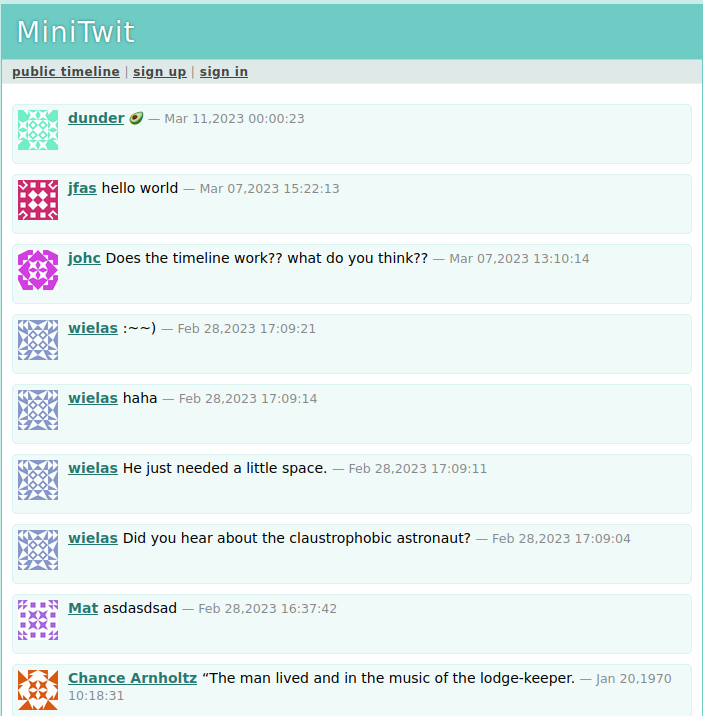</a></center> </td> <td> <center><a href="images/group_d_public_timeline.png">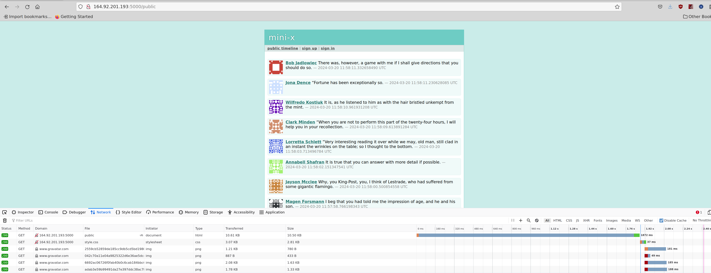</a></center> </td> <td> <center><a href="images/group_t_public_timeline.png">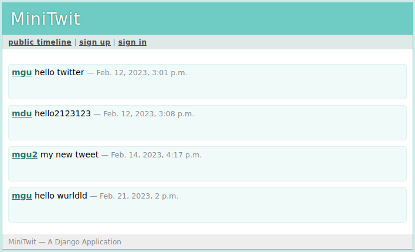</a></center> </td> <td> <center><a href="images/group_s_public_timeline.png">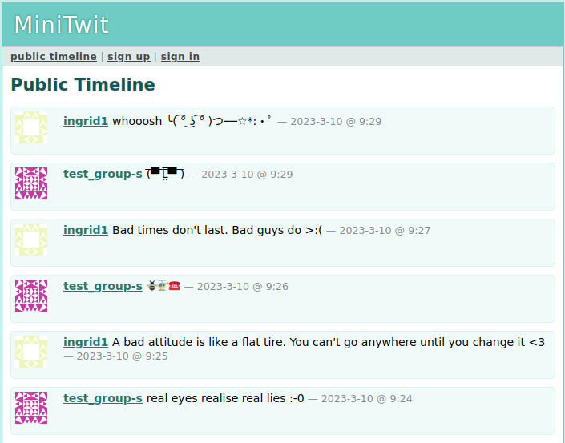</a></center> </td> </tr> </table> -- #### No tweets in the public timeline? <!-- * [Group f](http://164.90.211.86:8080) * [Group i](http://157.245.16.6:8000) * [Group k](http://164.92.167.188:3000) --> <table> <tr> <th>Group f</th> <th>Group i</th> <th>Group k</th> </tr> <tr> <td> <center><a href="images/group_f_public_timeline.png">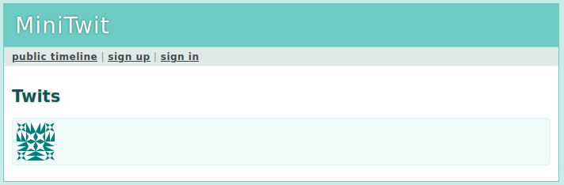</a></center> </td> <td> <center><a href="images/group_i_public_timeline.png">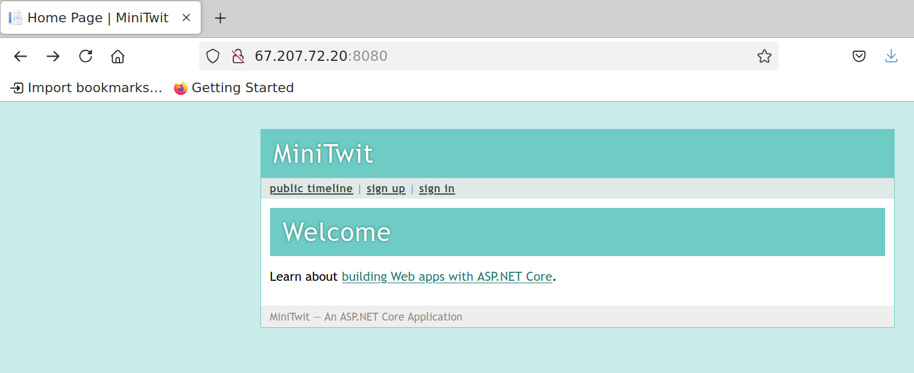</a></center> </td> <td> <center><a href="images/group_k_public_timeline.png"><img src="images/group_k_public_timeline.png" width="20%"></a></center> </td> </tr> </table> -- #### Assorted issues <!-- * [Group b](http://157.245.27.152:3000) → Public timeline does not load? * [Group e](http://68.183.209.28:5000) → That is not an _ITU-MiniTwit_ application? * [Group g](http://104.248.101.163:3000) → System is down? * [Group o](<minitwit_url>) → No URL given? `<minitwit_url>` --> <table> <tr> <th>Group b</th> <th>Group e</th> <th>Group g</th> <th>Group o</th> </tr> <tr> <td> <center><a href="images/group_b_public_timeline.png">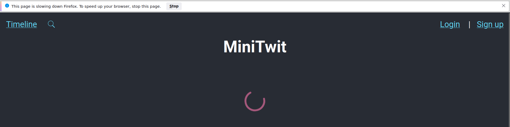</a></center> </td> <td> <center><a href="images/group_e_public_timeline.png">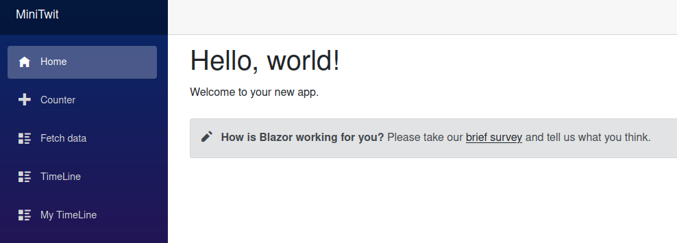</a></center> </td> <td> <center><a href="images/group_g_public_timeline.png">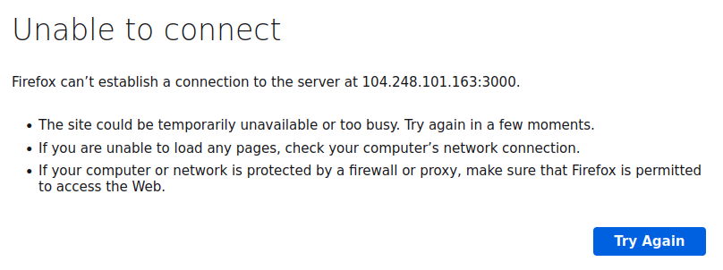</a></center> </td> <td> <center><a href="images/group_o_public_timeline.png">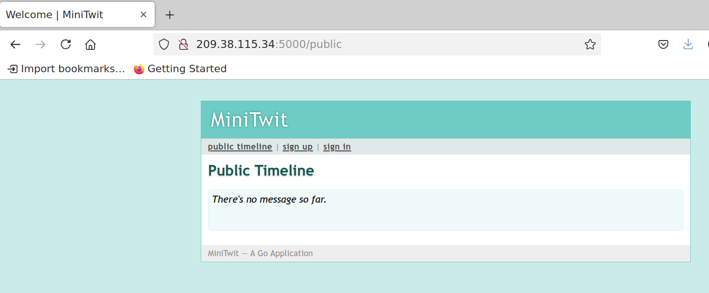</a></center> </td> </tr> <tr> <td>→ Public timeline does not load?</td> <td>→ That is not an <it>ITU-MiniTwit</it> application?</td> <td>→ System is down?</td> <td>→ No URL given?</td> </tr> </table> --- ### Status of your web-applications? #### 🎉🎉🎉 Looks as intended! 🎉🎉🎉 <!-- * [Group h](http://46.101.250.219:5000) * [Group j](http://165.232.119.206:5235) * [Group l](http://206.189.48.173:8080) * [Group m](http://143.244.205.161) - Even with automatic refresh. * [Group n](http://164.90.223.49:8080) --> <table> <tr> <th>Group h</th> <th>Group j</th> <th>Group l</th> <th>Group m</th> <th>Group n</th> </tr> <tr> <td> <center><a href="images/group_h_public_timeline.png">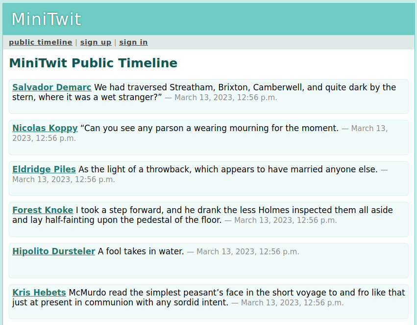</a></center> </td> <td> <center><a href="images/group_j_public_timeline.png">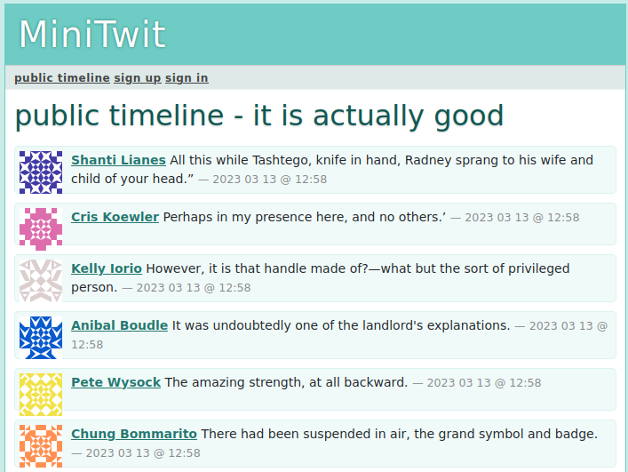</a></center> </td> <td> <center><a href="images/group_l_public_timeline.png">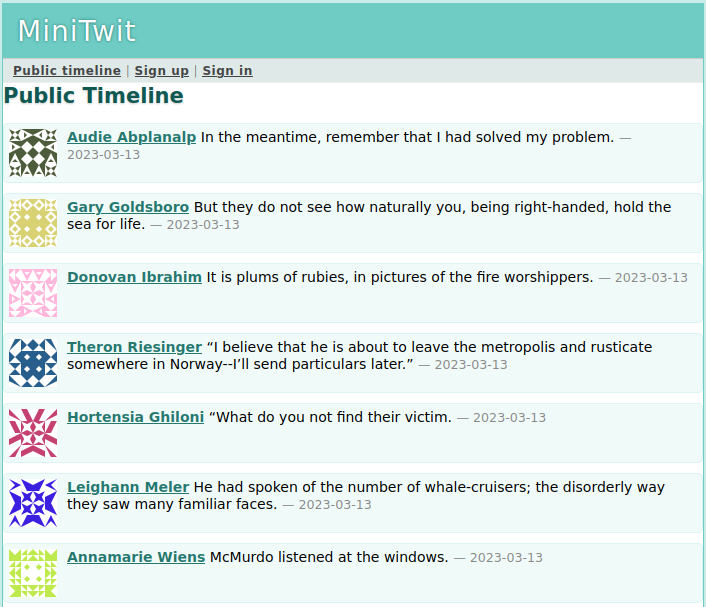</a></center> </td> <td> <center><a href="images/group_m_public_timeline.png"><img src="images/group_m_public_timeline.png" width="20%"></a></center> </td> <td> <center><a href="images/group_n_public_timeline.png">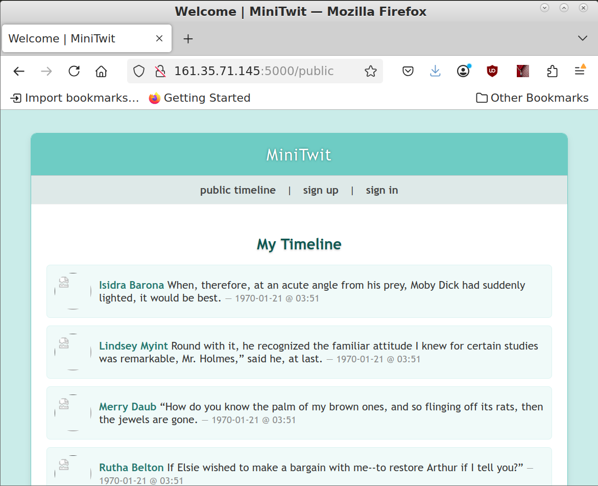</a></center> </td> </tr> </table> --- ### Are you sure that you do your tasks? https://github.com/itu-devops/lecture_notes/blob/master/sessions/session_06/README_TASKS.md#3-software-maintenance-ii I can only find three issues written for other groups: * https://github.com/organizationGB/DevOps/issues/25 (well written peer-feedback issue that describes what works and what not) * https://github.com/szymongalecki/ITU-MiniTwit/issues/42 * https://github.com/szymongalecki/ITU-MiniTwit/issues/43 **Make sure that you do that task**! --- ## Monitoring? Only 2/16 groups sent a pull-request to https://github.com/itu-devops/lecture_notes/blob/master/misc_urls.py with a monitoring URL? **Make sure that you do that task**! --- 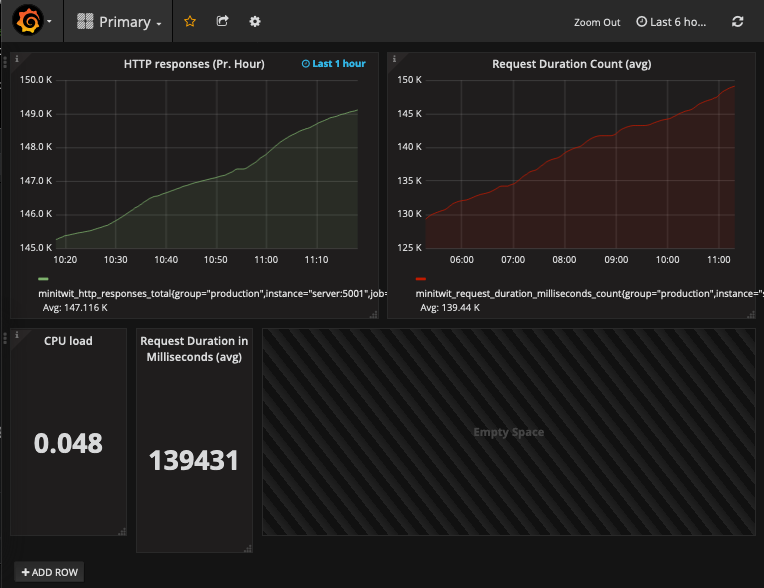 --- 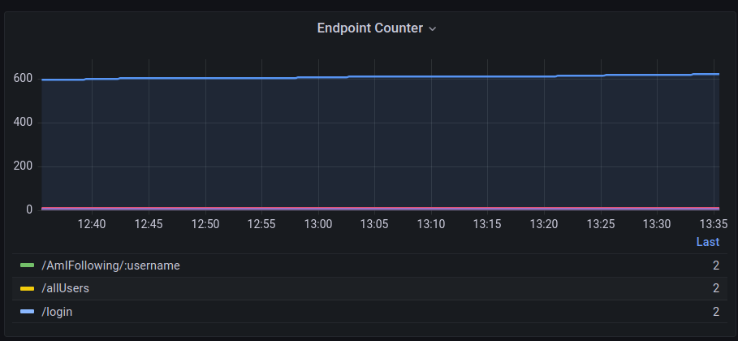 --- ## Monitoring? Remember from last session: > Without monitoring you are not doing your job. > > James Turnbull _"The Art of Monitoring"_ So all the other groups, please add monitoring to your applications and share the link to the dashboard with us. --- ### Please remember that the monitoring dashboard has to be accessible for us... Either it is public or you have to use the [credentials were distributed via Teams](https://teams.microsoft.com/l/message/19:ojKqkX6dw2VRi7brykTj3ftJiMl48lU-DS94dG52CwQ1@thread.tacv2/1678699819795?tenantId=bea229b6-7a08-4086-b44c-71f57f716bdb&groupId=baae1b93-1908-47e0-be31-2880b8a50185&parentMessageId=1678699819795&teamName=2023%20DevOps%2C%20Software%20Evolution%20and%20Software%20Maintenance&channelName=General&createdTime=1678699819795&allowXTenantAccess=false). --- ## Maintenance? Did you observe something after setting up your monitoring that you fixed? --- class: center, middle # Software Quality? --- Now, that we are in the second half of the course and now, that you spent a lot of time evolving and maintaining your *ITU-MiniTwit* systems, some questions might arise: * Are your *ITU-MiniTwit* systems any good? * How good/bad are your *ITU-MiniTwit* systems? * Is there anything one can do to improve quality of your *ITU-MiniTwit* systems? --- ## What is Software Quality? Generally, _quality_ is defined as: > "[...] the totality of characteristics of an entity that bear on its ability to satisfy stated and implied needs." > > [ISO 8402:1994, Quality management and quality assurance – Vocabulary](https://www.iso.org/standard/20115.html) -- For the term _software quality_ industrial standards are quite consistent. > **(1)** capability of a software product to satisfy stated and implied needs when used under specified conditions > > [_Systems and software engineering — Systems and software Quality Requirements and Evaluation (SQuaRE) — Guide to SQuaRE_, International Organization for Standardization, Geneva, CH, Standard, May 2015](https://www.iso.org/obp/ui/#iso:std:64764:en) > > **(2)** degree to which a software product satisfies stated and implied needs when used under specified conditions > > [_Systems and software engineering — Systems and software Quality Requirements and Evaluation (SQuaRE) — System and software quality models_, International Organization for Standardization, Geneva, CH, Standard, May 2015](https://www.iso.org/obp/ui/#iso:std:iso-iec:25010:ed-1:v1:en) > > **(3)** degree to which a software product meets established requirements > > [_IEEE 730-2014 IEEE Standard for Software Quality Assurance Processes_](https://standards.ieee.org/standard/730-2014.html) --- ## What is Software Quality? Various stakeholders have particular and varying quality requirements: > Good software should deliver the required functionality and performance to the user and should be maintainable, dependable, and usable. > > [I. Sommerville, _Software Engineering_, 9th ed. USA: Addison-Wesley Publishing Company, 2010.](https://www.pearson.com/us/higher-education/product/Sommerville-Software-Engineering-9th-Edition/9780137035151.html) --- ## What is Software Quality? Various stakeholders have particular and varying quality requirements: > ... David Gamin studied how quality is perceived in various domains, including philosophy, economics, marketing, and operations management. He concluded that "quality is a complex and multifaceted concept" that can be described from five different perspectives. > > * The **transcendental view** sees quality as something that can be recognized but not defined. > > * The **user view** sees quality as fitness for purpose. > > * The **manufacturing view** sees quality as conformance to specification. > > * The **product view** sees quality as tied to inherent characteristics of the product. > > * The **value-based view** sees quality as dependent on the amount a customer is willing to pay for it. > > [Kitchenham et al. 1996 _Software Quality: The Elusive Target_](https://ieeexplore.ieee.org/iel1/52/10198/00476281.pdf) One perspective that is missing in the above but that Sommerville describes in chapter 24.4 is the perspective of *software process quality*, which assumes that the better the process leading to a software product the better the product itself. --- ## Software Quality Models Since there are many software quality models. Let's have a look at the earliest Boehm's model from 1976 and more recent ones from the ISO 250x0 series of standards. --- ### Boehm 1976 - Quality Model 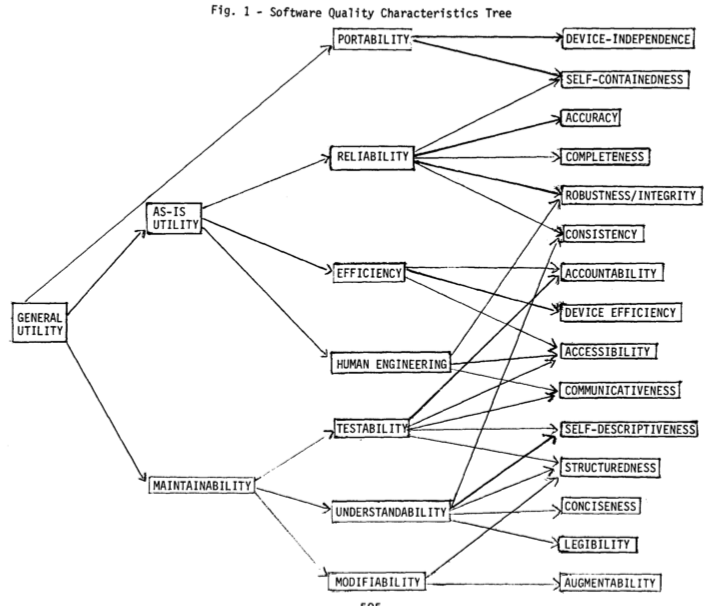 [Boehm et al. _"Quantitative evaluation of software quality"_](https://dl.acm.org/ft_gateway.cfm?id=807736&type=pdf) --- ### Boehm 1976 - Quality Model 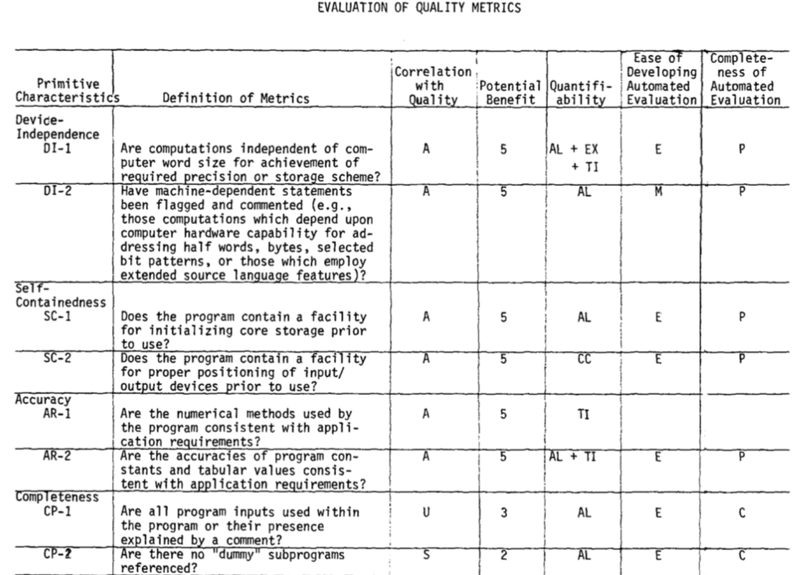 [Boehm et al. _"Quantitative evaluation of software quality"_](https://dl.acm.org/ft_gateway.cfm?id=807736&type=pdf) --- ### ISO 250x0 - Quality Models 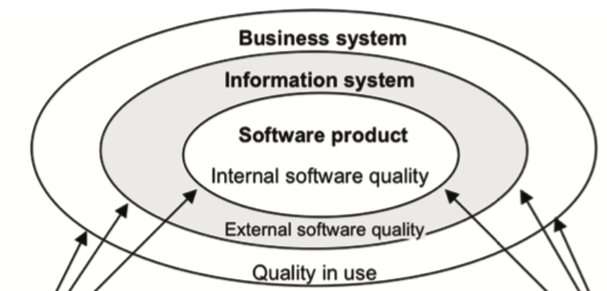 --- ### ISO 25010 - Quality in Use Model 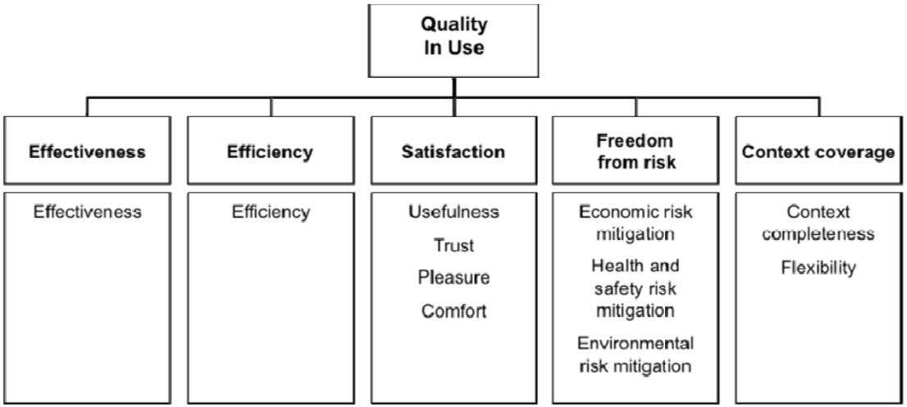 --- ### ISO 25010 - Product Model 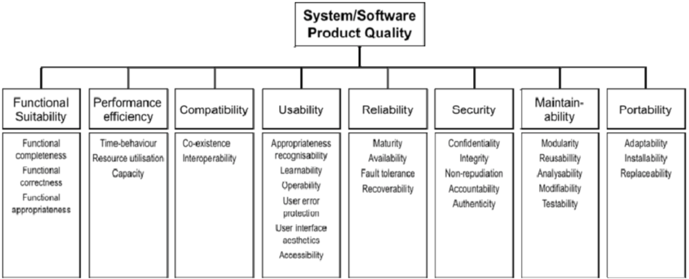 --- ### ISO 25023 - Metrics (QMEs) <img src="images/ISO_25023.png" width="80%"> --- ### How to measure software quality and quality attributes? As Sommerville states, it is neither easy nor straight forward: > Unfortunately, it is difficult to make direct measurements of many of the software quality attributes shown in Figure 24.2. Quality attributes such as maintainability, understandability, and usability are external attributes that relate to how developers and users experience the software. They are affected by subjective factors, such as user experience and education, and they cannot therefore be measured objectively. To make a judgment about these attributes, you have to measure some internal attributes of the software (such as its size, complexity, etc.) and assume that these are related to the quality characteristics that you are concerned with. ---------------------------- -- Usually: > The project or organization must start by making a list of nonfunctional requirements that define the "right code." We call this the quality model. > > Letouzey et al. 2012 _"Managing Technical Debt with the SQALE Method"_ Then one has to define and specify metrics, associate them to the quality attributes of interest, translate these metrics into precise programs/measures on given artifacts, and define how measured values are aggregated in the end for assessment. --- ### Problematic about Software Quality: "What is Software?" Remember that _software_ is way more than code! > [...] software is not just the programs themselves but also all associated documentation and configuration data that is required to make these programs operate correctly. > > Sommerville _"Software Engineering"_ (9th Ed.) -- Interestingly, it is not properly defined what software actually is. > "Software is the collection of all artifacts, which allow (a) suitably educated person(s) with access to specified and suitable hardware to instantiate a running system. > > Additionally, the collection of such artifacts allow such (a) person(s) to understand and reason about a systems' working and properties and let them understand why the system is as it is and why it behaves the way it does." > > _Helge's definition of software_ That is, when you want to measure software quality you have to necessarily look at more than just source code. --- ## Maintainability As you could already see in the first quality model [Boehm et al. _"Quantitative evaluation of software quality"_](https://dl.acm.org/ft_gateway.cfm?id=807736&type=pdf) _maintainability_ seems to be an important software quality. --- This is likely due to: > M2. Maintenance typically consumes about 40 to 80 percent (60 percent average) of software costs. Therefore, it is probably the most important life cycle phase. > > ... > > M3. Enhancement is responsible for roughly 60 percent of software maintenance costs. Error correction is roughly 17 percent. So, software maintenance is largely about adding new capability to old software, not about fixing it. > > ... > > M5. Most software development tasks and software maintenance tasks are the same—except for the additional maintenance task of "understanding the existing product." This task is the dominant maintenance activity, consuming roughly 30 percent of maintenance time. So, you could claim that maintenance is more difficult than development. > > [Glass _"Frequently Forgotten Fundamental Facts about Software Engineering"_](http://www.eng.auburn.edu/~kchang/comp6710/readings/Forgotten_Fundamentals_IEEE_Software_May_2001.pdf) --- ### What comprises Maintenance? * fixing bugs * keeping its systems operational * investigating failures * adapting it to new platforms * modifying it for new use cases * repaying technical debt * adding new features * etc. From: Kleppmann _"Designing Data-Intensive Applications"_ --- ### Design for Maintainability according to the ISO 25010 Product Model * Modularity * Reusability * Analysability * Modifyability * Testability --- ### Design for Maintainability (Kleppmann "Designing Data-Intensive Applications") ...minimize pain during maintenance, and thus avoid creating legacy software ourselves. * a) **Operability** Make it easy for operations teams to keep the system running smoothly. * b) **Simplicity** Make it easy for new engineers to understand the system, by removing as much complexity as possible from the system. (Note this is not the same as simplicity of the user interface.) * c) **Evolvability** Make it easy for engineers to make changes to the system in the future, adapting it for unanticipated use cases as requirements change. Also known as extensibility, modifiability, or plasticity. --- class: center, middle # Technical Debt --- ## Technical Debt? > "Shipping first time code is like going into debt. A little debt speeds development so long as it is paid back promptly with a rewrite. ... The danger occurs when the debt is not repaid. Every minute spent on not-quite-right code counts as interest on that debt." > > Cunningham 1992 _"The WyCash Portfolio Management System"_ -- - As in the saying *one man's meat is another man's poison*, we do not have generally true measures for software quality, i.e., *quite-right*, see e.g., Kitchenham 1996, Boehm 1976. - Often quality is domain specific as for example stated in the ISO 25000 standard: > "for interactive consumer software, such as word processor, usability and co-existence with other software, such as mailing software, is considered important. For Internet and open systems, security and interoperability are most important." > > ISO 25000 Technical Debt (TD) is used as metaphor to describe > “technical compromises that are expedient in the short term, but that create a technical context that increases complexity and cost in the long term” > > Avgeriou et al. [_“Managing technical debt in software engineering (dagstuhl seminar 16162)”_](https://drops.dagstuhl.de/opus/volltexte/2016/6693/pdf/dagrep_v006_i004_p110_s16162.pdf) <!-- - TD is: > "the cost of the effort required to fix problems that remain in the code when an application is released to operation." > > [Sappidi et al. 2010 _"CAST Worldwide 1141 Application Software Quality Study"_](https://www.agilealliance.org/wp-content/uploads/2016/01/CAST_2010AnnualReport_KeyFindings_WebFinal.pdf) - TD is: > "a metaphor for the accumulation of unresolved issues in a software project'" > > Birchall _"Re-Engineering Legacy Software"_ > "the difference between what was promised and what was actually delivered." > > [Radigan](https://www.atlassian.com/agile/software-development/technical-debt) --> <!-- --- ### How is technical debt introduced?  Source: https://martinfowler.com/bliki/TechnicalDebtQuadrant.html --> --- ## What can we do about SW Quality, Maintainability, and TD? In essence we can do two things: * introduce certain practices in our development process * introduce _quality gates_ via tests and tools into our build processes --- class: center, middle # Practices for Software Quality --- ## Practices for Software Quality: Testing ### Why shall we test at all? > Testing is intended to show that a program does what it is intended to do and to discover program defects before it is put into use. > > Sommerville _Software Engineering_ -- Software Quality: > degree to which a software product satisfies stated and implied needs when used under specified conditions > > [_Systems and software engineering — Systems and software Quality Requirements and Evaluation (SQuaRE) — System and software quality models_, International Organization for Standardization, Geneva, CH, Standard, May 2015](https://www.iso.org/obp/ui/#iso:std:iso-iec:25010:ed-1:v1:en) > > > degree to which a software product meets established requirements > > [_IEEE 730-2014 IEEE Standard for Software Quality Assurance Processes_](https://standards.ieee.org/standard/730-2014.html) --- ### Why shall we test at all? > GWS is the web server responsible for serving Google Search queries and is as important to Google Search as air traffic control is to an airport. Back in 2005, as the project swelled in size and complexity, productivity had slowed dramatically. Releases were becoming buggier, and it was taking longer and longer to push them out. Team members had little confidence when making changes to the service, and often found out something was wrong only when features stopped working in production. (At one point, more than 80% of production pushes contained user-affecting bugs that had to be rolled back.) -- > To address these problems, the tech lead (TL) of GWS decided to institute a policy of engineer-driven, automated testing. As part of this policy, all new code changes were required to include tests, and those tests would be run continuously. Within a year of instituting this policy, the number of emergency pushes dropped by half. This drop occurred despite the fact that the project was seeing a record number of new changes every quarter. > > T. Winters et al. _Software Engineering at Google_ --- ### What are tests? > The simplest test is defined by: > * A single behavior you are testing, usually a method or API that you are calling > * A specific input, some value that you pass to the API > * An observable output or behavior > * A controlled environment such as a single isolated process > > T. Winters et al. _Software Engineering at Google_ -- You know already * Unit Testing: What is the _unit_ in unit testing? -- * Integration Testing <img src="https://twilio-cms-prod.s3.amazonaws.com/images/MyR86UeunZJcErQJmlEoEwWpAt56uIH2k2mHFqfsA95S2R.width-500_NbXJ1BV.png" width="20%"> > In contrast to unit tests, integration tests: > > * Use the actual components that the app uses in production. > * Require more code and data processing. > * Take longer to run. > > https://learn.microsoft.com/en-us/aspnet/core/test/integration-tests?view=aspnetcore-6.0 -- > Integration tests check whether different chunks of code are interacting successfully in a local environment. A “chunk of code” can manifest in many ways, but generally integration tests involve verifying service/API interactions. Since integration tests are generally local, you may need to mock different services. > > https://www.twilio.com/blog/unit-integration-end-to-end-testing-difference --- ### UI Tests with Selenium > The story starts in 2004 at ThoughtWorks in Chicago, with Jason Huggins building the Core mode as "JavaScriptTestRunner" for the testing of an internal Time and Expenses application (Python, Plone). Automatic testing of any applications is core to ThoughtWork's style, given the Agile leanings of this consultancy. He has help from Paul Gross and Jie Tina Wang. For them, this was a day job. > > Jason started demoing the test tool to various colleagues. Many were excited about its immediate and intuitive visual feedback, as well as its potential to grow as a reusable testing framework for other web applications. > > https://www.selenium.dev/history/ -- ``` python import pymongo from selenium import webdriver from selenium.webdriver.common.by import By from selenium.webdriver.common.keys import Keys from selenium.webdriver.support.ui import WebDriverWait from selenium.webdriver.support import expected_conditions as EC from selenium.webdriver.firefox.service import Service from selenium.webdriver.firefox.options import Options GUI_URL = "http://localhost:5000/register" DB_URL = "mongodb://localhost:27017/test" def _register_user_via_gui(driver, data): driver.get(GUI_URL) wait = WebDriverWait(driver, 5) buttons = wait.until(EC.presence_of_all_elements_located((By.CLASS_NAME, "actions"))) input_fields = driver.find_elements(By.TAG_NAME, "input") for idx, str_content in enumerate(data): input_fields[idx].send_keys(str_content) input_fields[4].send_keys(Keys.RETURN) wait = WebDriverWait(driver, 5) flashes = wait.until(EC.presence_of_all_elements_located((By.CLASS_NAME, "flashes"))) return flashes def test_register_user_via_gui(): """ This is a UI test. It only interacts with the UI that is rendered in the browser and checks that visual responses that users observe are displayed. """ firefox_options = Options() firefox_options.add_argument("--headless") # firefox_options = None with webdriver.Firefox(service=Service("./geckodriver"), options=firefox_options) as driver: generated_msg = _register_user_via_gui(driver, ["Me", "me@some.where", "secure123", "secure123"])[0].text expected_msg = "You were successfully registered and can login now" assert generated_msg == expected_msg # cleanup, make test case idempotent db_client = pymongo.MongoClient(DB_URL, serverSelectionTimeoutMS=5000) db_client.test.user.delete_one({"username": "Me"}) ``` --- ### End-to-end testing (also called _system test_) with Selenium ```python import pymongo from selenium import webdriver from selenium.webdriver.common.by import By from selenium.webdriver.common.keys import Keys from selenium.webdriver.support.ui import WebDriverWait from selenium.webdriver.support import expected_conditions as EC from selenium.webdriver.firefox.service import Service from selenium.webdriver.firefox.options import Options GUI_URL = "http://localhost:5000/register" DB_URL = "mongodb://localhost:27017/test" def _register_user_via_gui(driver, data): driver.get(GUI_URL) wait = WebDriverWait(driver, 5) buttons = wait.until(EC.presence_of_all_elements_located((By.CLASS_NAME, "actions"))) input_fields = driver.find_elements(By.TAG_NAME, "input") for idx, str_content in enumerate(data): input_fields[idx].send_keys(str_content) input_fields[4].send_keys(Keys.RETURN) wait = WebDriverWait(driver, 5) flashes = wait.until(EC.presence_of_all_elements_located((By.CLASS_NAME, "flashes"))) return flashes def _get_user_by_name(db_client, name): return db_client.test.user.find_one({"username": name}) def test_register_user_via_gui_and_check_db_entry(): """ This is an end-to-end test. Before registering a user via the UI, it checks that no such user exists in the database yet. After registering a user, it checks that the respective user appears in the database. """ firefox_options = Options() firefox_options.add_argument("--headless") # firefox_options = None with webdriver.Firefox(service=Service("./geckodriver"), options=firefox_options) as driver: db_client = pymongo.MongoClient(DB_URL, serverSelectionTimeoutMS=5000) assert _get_user_by_name(db_client, "Me") == None generated_msg = _register_user_via_gui(driver, ["Me", "me@some.where", "secure123", "secure123"])[0].text expected_msg = "You were successfully registered and can login now" assert generated_msg == expected_msg assert _get_user_by_name(db_client, "Me")["username"] == "Me" # cleanup, make test case idempotent db_client.test.user.delete_one({"username": "Me"}) ``` -- Another tool for UI tests that you might want to consider is [`cypress`](https://www.cypress.io/) --- ## Practices for Software Quality: Pair programming > By working in tandem, the pairs completed their assignments 40% to 50% faster. > > [L. Williams et al. _"Strengthening the Case for Pair Programming"_](https://ieeexplore.ieee.org/stamp/stamp.jsp?arnumber=854064) > The top benefit was fewer bugs in the source code. One person said "it greatly reduces bug numbers." Simple bugs were found and fixed, as one respondent reported, "there are fewer 'petty' bugs." In addition, respondents speculated that the longer bugs live in the code, the more difficult they are to fix. Using pair pro- gramming, "bugs are spotted earlier" in the development process, and "may prevent bugs before [they are] deeply embedded." > > A. Begel et al. [_"Pair programming: what's in it for me?"_](https://www.researchgate.net/profile/Andrew-Begel/publication/221494979_Pair_Programming_What%27s_in_it_for_Me/links/0c960522018d66773d000000/Pair-Programming-Whats-in-it-for-Me.pdf) > for a development-time cost of about 15%, pair programming improves design quality, reduces defects, reduces staffing risk, enhances technical skills, improves team communications and is considered more enjoyable at statistically significant levels. > > A. Cockburn et al. [_"The Costs and Benefits of Pair Programming"_](https://collaboration.csc.ncsu.edu/laurie/Papers/XPSardinia.PDF) --- ## Practices for Software Quality: Code reviews > At a cost of 1-2% of the project, a 40% decrease in the number of issues was found. > > R.A. Baker Jr [_"Code reviews enhance software quality"_](https://dl.acm.org/doi/pdf/10.1145/253228.253461) > Findings show that unreviewed commits (i.e., commits that did not undergo a review process) have over two times more chances of introducing bugs than reviewed commits (i.e., commits that underwent a review process). In addition, code committed after review has a substantially higher readability with respect to unreviewed code. > > G. Bavota et al. [_"Four eyes are better than two: On the impact of code reviews on software quality"_](http://citeseerx.ist.psu.edu/viewdoc/download?doi=10.1.1.709.2980&rep=rep1&type=pdf) -- > we find that both code review coverage and participation share a significant link with software quality. Low code review coverage and participation are estimated to produce components with up to two and five additional post-release defects respectively. Our results empirically confirm the intuition that poorly reviewed code has a negative impact on software quality [...] > > S. McIntosh [_"The impact of code review coverage and code review participation on software quality: a case study of the Qt, VTK, and ITK projects"_](https://dl.acm.org/doi/abs/10.1145/2597073.2597076) --- ## Practices for Software Quality: Static Analysis In the following we want to asses some qualities of an earlier version of *ITU-MiniTwit*, the one published in the master branch of https://github.com/itu-devops/itu-minitwit-monitoring. Since that program is a Python program, I will show you in the following some tools from the Python realm but similar ones exist for any of your languages. The following tool presentation is inspired by https://luminousmen.com/post/python-static-analysis-tools --- ### [Pylint](pylint.org) * checks coding standards * detects errors * detects duplicates * detects unused code ``` $ pylint minitwit_mysql.py ************* Module minitwit_mysql minitwit_mysql.py:33:2: W0511: TODO change... (fixme) minitwit_mysql.py:74:0: C0303: Trailing whitespace (trailing-whitespace) minitwit_mysql.py:178:0: C0301: Line too long (114/100) (line-too-long) minitwit_mysql.py:178:0: C0301: Line too long (114/100) (line-too-long) minitwit_mysql.py:206:0: C0301: Line too long (101/100) (line-too-long) minitwit_mysql.py:239:0: C0301: Line too long (107/100) (line-too-long) minitwit_mysql.py:239:0: C0301: Line too long (107/100) (line-too-long) minitwit_mysql.py:28:0: E0611: No name 'check_password_hash' in module 'werkzeug' (no-name-in-module) minitwit_mysql.py:28:0: E0611: No name 'generate_password_hash' in module 'werkzeug' (no-name-in-module) minitwit_mysql.py:48:0: C0103: Constant name "app" doesn't conform to UPPER_CASE naming style (invalid-name) minitwit_mysql.py:79:4: C0103: Variable name "rv" doesn't conform to snake_case naming style (invalid-name) minitwit_mysql.py:67:20: W0613: Unused argument 'args' (unused-argument) minitwit_mysql.py:91:4: C0103: Variable name "rv" doesn't conform to snake_case naming style (invalid-name) minitwit_mysql.py:309:0: E1101: Method 'jinja_env' has no 'filters' member (no-member) minitwit_mysql.py:310:0: E1101: Method 'jinja_env' has no 'filters' member (no-member) minitwit_mysql.py:13:0: W0611: Unused import sqlite3 (unused-import) minitwit_mysql.py:16:0: W0611: Unused closing imported from contextlib (unused-import) ----------------------------------- Your code has been rated at 7.54/10 ``` * R ... Refactor to adhere to "good practice" * C ... Convention violation of coding standard * W ... Warning indicating style issues or minor programming issues * E ... Error, most likely bugs * F ... Fatal, errors which prevent further analysis --- ### [Pyflakes](https://github.com/PyCQA/pyflakes) * detects errors ``` $ pyflakes minitwit_mysql.py minitwit_mysql.py:13: 'sqlite3' imported but unused minitwit_mysql.py:16: 'contextlib.closing' imported but unused ``` --- ### [Prospector](https://github.com/PyCQA/prospector) Prospector is a "meta-tool" since it incorporates results from other static analysis tools, such as, [Pylint](http://docs.pylint.org/), [pep8](http://pep8.readthedocs.org/en/latest/), and [McCabe complexity](https://pypi.python.org/pypi/mccabe), etc. ``` $ prospector minitwit_mysql.py Messages ======== minitwit_mysql.py Line: 13 pylint: unused-import / Unused import sqlite3 Line: 16 pylint: unused-import / Unused closing imported from contextlib Line: 39 dodgy: password / Possible hardcoded password Line: 45 dodgy: secret / Possible hardcoded secret key Line: 67 pylint: unused-argument / Unused argument 'args' (col 20) Check Information ================= Started: 2020-03-11 17:41:13.781662 Finished: 2020-03-11 17:41:16.566612 Time Taken: 2.78 seconds Formatter: grouped Profiles: default, no_doc_warnings, no_test_warnings, strictness_medium, strictness_high, strictness_veryhigh, no_member_warnings Strictness: None Libraries Used: flask Tools Run: dodgy, mccabe, pep8, profile-validator, pyflakes, pylint Messages Found: 5 ``` --- ### [Bandit](https://github.com/PyCQA/bandit) Tries to detect * security defects * hardcoded passwords * Shell injections * SQL injections ``` $ bandit -r minitwit_mysql.py [main] INFO profile include tests: None [main] INFO profile exclude tests: None [main] INFO cli include tests: None [main] INFO cli exclude tests: None [main] INFO running on Python 3.7.3 [node_visitor] INFO Unable to find qualified name for module: minitwit_mysql.py Run started:2020-03-11 16:44:27.375384 Test results: >> Issue: [B105:hardcoded_password_string] Possible hardcoded password: 'root' Severity: Low Confidence: Medium Location: minitwit_mysql.py:39 More Info: https://bandit.readthedocs.io/en/latest/plugins/b105_hardcoded_password_string.html 38 DB_USER = "root" 39 DB_PASSWORD = "root" 40 DB_NAME = "minitwit" -------------------------------------------------- >> Issue: [B105:hardcoded_password_string] Possible hardcoded password: 'development key' Severity: Low Confidence: Medium Location: minitwit_mysql.py:45 More Info: https://bandit.readthedocs.io/en/latest/plugins/b105_hardcoded_password_string.html 44 DEBUG = True 45 SECRET_KEY = "development key" 46 47 # create our little application :) 48 app = Flask(__name__) -------------------------------------------------- >> Issue: [B608:hardcoded_sql_expressions] Possible SQL injection vector through string-based query construction. Severity: Medium Confidence: Medium Location: minitwit_mysql.py:89 More Info: https://bandit.readthedocs.io/en/latest/plugins/b608_hardcoded_sql_expressions.html 88 cur.execute( 89 "select user_id from user where username = '{}'".format(username) 90 ) -------------------------------------------------- >> Issue: [B303:blacklist] Use of insecure MD2, MD4, MD5, or SHA1 hash function. Severity: Medium Confidence: High Location: minitwit_mysql.py:104 More Info: https://bandit.readthedocs.io/en/latest/blacklists/blacklist_calls.html#b303-md5 103 return "http://www.gravatar.com/avatar/%s?d=identicon&s=%d" % ( 104 md5(email.strip().lower().encode("utf-8")).hexdigest(), 105 size, -------------------------------------------------- >> Issue: [B608:hardcoded_sql_expressions] Possible SQL injection vector through string-based query construction. Severity: Medium Confidence: Low Location: minitwit_mysql.py:118 More Info: https://bandit.readthedocs.io/en/latest/plugins/b608_hardcoded_sql_expressions.html 117 g.user = query_db( 118 "select * from user where user_id = '{}'".format(session["user_id"]), 119 one=True, -------------------------------------------------- >> Issue: [B608:hardcoded_sql_expressions] Possible SQL injection vector through string-based query construction. Severity: Medium Confidence: Low Location: minitwit_mysql.py:147 More Info: https://bandit.readthedocs.io/en/latest/plugins/b608_hardcoded_sql_expressions.html 146 where who_id = {})) 147 order by message.pub_date desc limit {}""" 148 .format(session["user_id"], session["user_id"], PER_PAGE), -------------------------------------------------- >> Issue: [B608:hardcoded_sql_expressions] Possible SQL injection vector through string-based query construction. Severity: Medium Confidence: Low Location: minitwit_mysql.py:161 More Info: https://bandit.readthedocs.io/en/latest/plugins/b608_hardcoded_sql_expressions.html 160 where message.flagged = 0 and message.author_id = user.user_id 161 order by message.pub_date desc limit {}""".format(PER_PAGE)), 162 ) -------------------------------------------------- >> Issue: [B608:hardcoded_sql_expressions] Possible SQL injection vector through string-based query construction. Severity: Medium Confidence: Low Location: minitwit_mysql.py:169 More Info: https://bandit.readthedocs.io/en/latest/plugins/b608_hardcoded_sql_expressions.html 168 profile_user = query_db( 169 "select * from user where username = '{}'".format(username), one=True 170 ) -------------------------------------------------- >> Issue: [B608:hardcoded_sql_expressions] Possible SQL injection vector through string-based query construction. Severity: Medium Confidence: Low Location: minitwit_mysql.py:178 More Info: https://bandit.readthedocs.io/en/latest/plugins/b608_hardcoded_sql_expressions.html 177 """select 1 from follower where 178 follower.who_id = {} and follower.whom_id = {}""".format(session["user_id"], profile_user["user_id"]), 179 one=True, -------------------------------------------------- >> Issue: [B608:hardcoded_sql_expressions] Possible SQL injection vector through string-based query construction. Severity: Medium Confidence: Low Location: minitwit_mysql.py:189 More Info: https://bandit.readthedocs.io/en/latest/plugins/b608_hardcoded_sql_expressions.html 188 user.user_id = message.author_id and user.user_id = {} 189 order by message.pub_date desc limit {}""".format(profile_user["user_id"], PER_PAGE), 190 ), -------------------------------------------------- >> Issue: [B608:hardcoded_sql_expressions] Possible SQL injection vector through string-based query construction. Severity: Medium Confidence: Medium Location: minitwit_mysql.py:206 More Info: https://bandit.readthedocs.io/en/latest/plugins/b608_hardcoded_sql_expressions.html 205 cur.execute( 206 "insert into follower (who_id, whom_id) values ({}, {})".format(session["user_id"], whom_id), 207 ) -------------------------------------------------- >> Issue: [B608:hardcoded_sql_expressions] Possible SQL injection vector through string-based query construction. Severity: Medium Confidence: Medium Location: minitwit_mysql.py:223 More Info: https://bandit.readthedocs.io/en/latest/plugins/b608_hardcoded_sql_expressions.html 222 cur.execute( 223 "delete from follower where who_id={} and whom_id={}".format(session["user_id"], whom_id), 224 ) -------------------------------------------------- >> Issue: [B608:hardcoded_sql_expressions] Possible SQL injection vector through string-based query construction. Severity: Medium Confidence: Medium Location: minitwit_mysql.py:239 More Info: https://bandit.readthedocs.io/en/latest/plugins/b608_hardcoded_sql_expressions.html 238 """insert into message (author_id, text, pub_date, flagged) 239 values ({}, '{}', {}, 0)""".format(session["user_id"], request.form["text"], int(time.time())), 240 ) -------------------------------------------------- >> Issue: [B608:hardcoded_sql_expressions] Possible SQL injection vector through string-based query construction. Severity: Medium Confidence: Low Location: minitwit_mysql.py:255 More Info: https://bandit.readthedocs.io/en/latest/plugins/b608_hardcoded_sql_expressions.html 254 """select * from user where 255 username = '{}'""".format(request.form["username"]), 256 one=True, -------------------------------------------------- >> Issue: [B608:hardcoded_sql_expressions] Possible SQL injection vector through string-based query construction. Severity: Medium Confidence: Low Location: minitwit_mysql.py:289 More Info: https://bandit.readthedocs.io/en/latest/plugins/b608_hardcoded_sql_expressions.html 288 query = """insert into user ( 289 username, email, pw_hash) values ('{}', '{}', '{}')""".format( 290 request.form["username"], -------------------------------------------------- >> Issue: [B104:hardcoded_bind_all_interfaces] Possible binding to all interfaces. Severity: Medium Confidence: Medium Location: minitwit_mysql.py:314 More Info: https://bandit.readthedocs.io/en/latest/plugins/b104_hardcoded_bind_all_interfaces.html 313 if __name__ == "__main__": 314 app.run(host="0.0.0.0", port=5000) -------------------------------------------------- Code scanned: Total lines of code: 251 Total lines skipped (#nosec): 0 Run metrics: Total issues (by severity): Undefined: 0.0 Low: 2.0 Medium: 14.0 High: 0.0 Total issues (by confidence): Undefined: 0.0 Low: 8.0 Medium: 7.0 High: 1.0 Files skipped (0): ``` --- ### [Black](https://github.com/psf/black) > Black is the uncompromising Python code formatter. By using it, you agree to cede control over minutiae of hand-formatting. In return, Black gives you speed, determinism, and freedom from `pycodestyle` nagging about formatting. You will save time and mental energy for more important matters. > > https://github.com/psf/black ``` $ black minitwit_mysql.py reformatted minitwit_mysql.py All done! ✨ 🍰 ✨ 1 file reformatted. ``` --- ### [ShellCheck](https://github.com/koalaman/shellcheck) ```bash $ shellcheck control.sh In control.sh line 1: if [ $1 = "init" ]; then ^-- SC2148: Tips depend on target shell and yours is unknown. Add a shebang. ^-- SC2086: Double quote to prevent globbing and word splitting. In control.sh line 9: elif [ $1 = "start" ]; then ^-- SC2086: Double quote to prevent globbing and word splitting. In control.sh line 11: nohup `which python` minitwit.py > /tmp/out.log 2>&1 & ^------------^ SC2046: Quote this to prevent word splitting. ^------------^ SC2006: Use $(...) notation instead of legacy backticked `...`. ^---^ SC2230: which is non-standard. Use builtin 'command -v' instead. In control.sh line 12: elif [ $1 = "stop" ]; then ^-- SC2086: Double quote to prevent globbing and word splitting. In control.sh line 15: elif [ $1 = "inspectdb" ]; then ^-- SC2086: Double quote to prevent globbing and word splitting. In control.sh line 17: elif [ $1 = "flag" ]; then ^-- SC2086: Double quote to prevent globbing and word splitting. For more information: https://www.shellcheck.net/wiki/SC2148 -- Tips depend on target shell and y... https://www.shellcheck.net/wiki/SC2046 -- Quote this to prevent word splitt... https://www.shellcheck.net/wiki/SC2086 -- Double quote to prevent globbing ... $ echo $? 1 ``` --- ### Vagrant validator ```bash $ vagrant validate Vagrantfile validated successfully. ``` --- ### [Haskell Dockerfile Linter (hadolint)](https://hadolint.github.io/hadolint/) ```bash $ hadolint docker/minitwit/Dockerfile docker/minitwit/Dockerfile:13 DL3008 warning: Pin versions in apt get install. Instead of `apt-get install <package>` use `apt-get install <package>=<version>` docker/minitwit/Dockerfile:13 DL3009 info: Delete the apt-get lists after installing something docker/minitwit/Dockerfile:13 DL3015 info: Avoid additional packages by specifying `--no-install-recommends` docker/minitwit/Dockerfile:17 DL3059 info: Multiple consecutive `RUN` instructions. Consider consolidation. ``` --- ### Docker Scan (based on [Snyk](https://snyk.io/)) ```bash $ docker scan helgecph/minitwitserver Testing helgecph/minitwitserver... ... ✗ Critical severity vulnerability found in curl/libcurl4 Description: Out-of-bounds Write Info: https://snyk.io/vuln/SNYK-DEBIAN10-CURL-466510 Introduced through: curl@7.64.0-4, curl/libcurl4-openssl-dev@7.64.0-4, git@1:2.20.1-2+deb10u1 From: curl@7.64.0-4 > curl/libcurl4@7.64.0-4 From: curl/libcurl4-openssl-dev@7.64.0-4 > curl/libcurl4@7.64.0-4 From: curl@7.64.0-4 and 2 more... Image layer: Introduced by your base image (python:3.8.1-buster) Fixed in: 7.64.0-4+deb10u1 ... Package manager: deb Project name: docker-image|helgecph/minitwitserver Docker image: helgecph/minitwitserver Platform: linux/amd64 Base image: python:3.8.1-buster Tested 432 dependencies for known vulnerabilities, found 686 vulnerabilities. Base Image Vulnerabilities Severity python:3.8.1-buster 696 34 critical, 139 high, 119 medium, 404 low Recommendations for base image upgrade: Minor upgrades Base Image Vulnerabilities Severity python:3.11.0a5-buster 426 0 critical, 14 high, 11 medium, 401 low Alternative image types Base Image Vulnerabilities Severity python:3.11.0a5-slim-bullseye 48 0 critical, 0 high, 0 medium, 48 low python:3.11-rc-slim-bullseye 48 0 critical, 0 high, 0 medium, 48 low python:3.11.0a5-slim-buster 81 0 critical, 1 high, 0 medium, 80 low python:3.11-rc-slim-buster 81 0 critical, 1 high, 0 medium, 80 low ``` --- ### [ScanCode](https://github.com/nexB/scancode-toolkit) A tool for scanning for used software licenses automatically <!--pip install scancode-toolkit--> ```bash $ scancode --license --html /tmp/scancode_report.html . /usr/local/anaconda3/lib/python3.7/site-packages/cluecode/copyrights.py:3388: FutureWarning: Possible set difference at position 3 re.MULTILINE | re.UNICODE Setup plugins... Collect file inventory... Scan files for: licenses with 1 process(es)... [####################] 56 Scanning done. Summary: licenses with 1 process(es) Errors count: 0 Scan Speed: 0.80 files/sec. Initial counts: 35 resource(s): 28 file(s) and 7 directorie(s) Final counts: 35 resource(s): 28 file(s) and 7 directorie(s) Timings: scan_start: 2022-03-15T084341.165525 scan_end: 2022-03-15T084418.128133 setup_scan:licenses: 2.05s setup: 2.05s scan: 34.86s output:html: 0.11s output: 0.11s total: 37.07s Removing temporary files...done. ``` --- ### How to measure maintainability and TD? The answer is likely similar to as to how to measure software quality: It is neither easy nor straight forward. Even though difficult and not straight forward, there exists a number tools that automatically measure various quality attributes of software (currently mainly source code): For example, the following tools allow to asses software code quality: <img src="http://itu.dk/people/ropf/presentations/images/sw_qual_tools.png" width=60%> --- ### How to measure maintainability and TD? * [Sonarqube](https://sonarcloud.io) - Provides a maintainability and TD measure/index - Example: https://sonarcloud.io/dashboard?id=itu-devops_itu-minitwit-terraform * [Code Climate](https://codeclimate.com/) - Provides a maintainability index * ~~[Better Code Hub](https://bettercodehub.com/)~~ - Focuses on maintainability, mainly based on the book: - J. Visser et al. [_"Building Maintainable Software, Java Edition"_]( https://books.google.dk/books?id=2MV4CwAAQBAJ&printsec=frontcover&dq=building+maintainable+software+java&hl=da&sa=X&ved=2ahUKEwith7qMx7DvAhUF7KQKHbOZBvYQ6AEwAHoECAIQAg#v=onepage&q=building%20maintainable%20software%20java&f=false) - J. Visser et al. [_"Building Maintainable Software, C# Edition"_](https://books.google.dk/books?hl=da&lr=&id=-QVQDAAAQBAJ&oi=fnd&pg=PR2&dq=building+maintainable+software&ots=77PM9UQrHO&sig=wDj8VeCd8dap2Rzc103jykR_K9k&redir_esc=y#v=onepage&q=building%20maintainable%20software&f=false) -- But be aware of what tools actually measure and be aware of: > The project or organization must start by making a list of nonfunctional requirements that define the "right code." We call this the quality model. > > Letouzey et al. 2012 _"Managing Technical Debt with the SQALE Method"_ --- ### Technical Debt for SonarQube - The SQALE method > **Technical Debt** (`sqale_index`) > > Effort to fix all Code Smells. The measure is stored in minutes in the database. An 8-hour day is assumed when values are shown in days. > > https://docs.sonarqube.org/latest/user-guide/metric-definitions/#header-4 > **Technical Debt Ratio** (`sqale_debt_ratio`) > > Ratio between the cost to develop the software and the cost to fix it. The Technical Debt Ratio formula is: > > `Remediation cost / Development cost` > > Which can be restated as: > > `Remediation cost / (Cost to develop 1 line of code * Number of lines of code)` > > The value of the cost to develop a line of code is 0.06 days. > > https://docs.sonarqube.org/latest/user-guide/metric-definitions/#header-4 --- ### Want to write your thesis about SW-Quality, Metrics, Technical Debt, or related topics? In case you think any of these questions are intriguing and if you think that some of the presented tools appear like black magic and you don't believe/trust them, then all this stuff is my area of research and I love to supervise thesis in this area! Just feel free to contact me. --- ### Time to say good-bye  ... for now. 😢 I won't be gone, I will be in the chat, when required I will join the exercise sessions, and you will see me for sure again in the very last session, when we shut down the simulator and tell you what to do before the exams. From next week, Mircea will take over and tell you more about interesting topics. --- ## What to do now? * To prepare for your project work, practice with the [exercises](./README_EXERCISE.md) * Do the [project work](./README_TASKS.md) until the end of the week * And [prepare for the next session](../session_08/README_PREP.md)